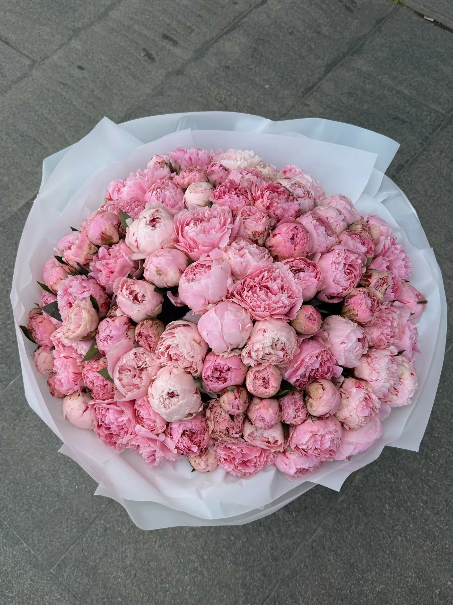
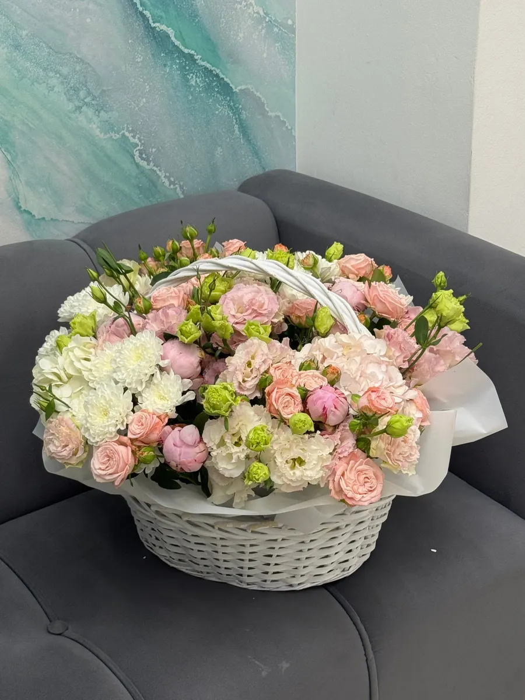
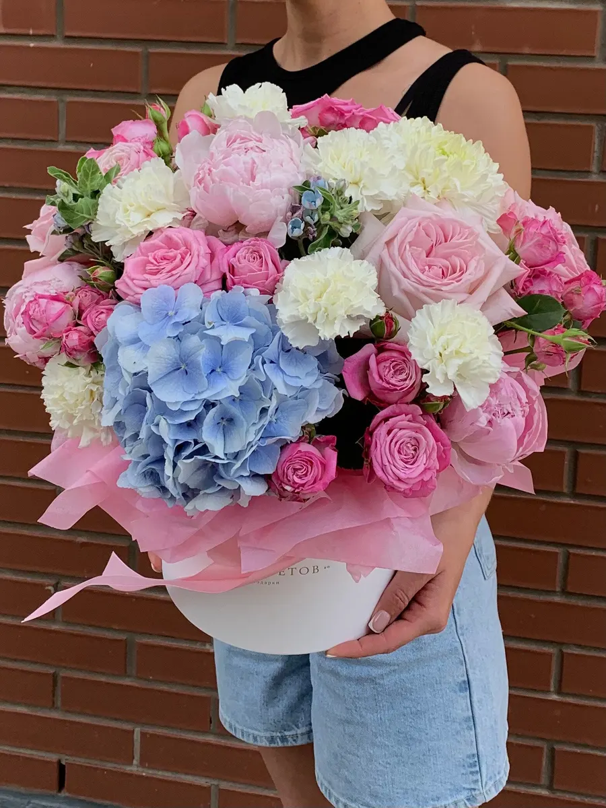
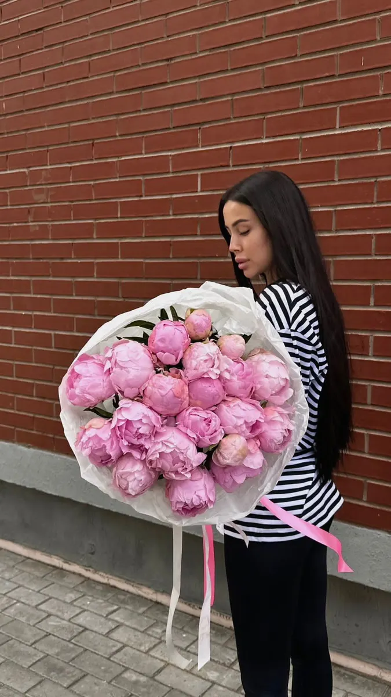

Цветочный салон · Ижевск
Аромат цветов: цветы и букеты в Ижевске
Выберите букет или композицию и дату - заказ в одном сообщении. Состав, оформление и цену назовём при подтверждении.
- Заказ одним сообщением
- Ждём: ежедневно, круглосуточно
- 4,7 и 51 отзыв на Яндекс.Картах

Что можно заказать
Цену называем при подтверждении заказа: она зависит от цветов, размера и оформления.
Позиции
- Букеты и композициив отзывах: уникальные букеты по описанию или фотоуточнить
- Свадебные букетыв отзыве: собирали букеты родителям на свадьбууточнить
- Букеты в подарокв отзывах: упаковывают красивоуточнить
- Работа круглосуточнов отзывах и на карточке: круглосуточноуточнить
Как заказать
Пишете нам
Расскажите, какой повод, на какую дату и какие цветы любит тот, кому дарите, или выберите в форме ниже.
Согласуем детали
Состав, оформление и цену называем при подтверждении заказа.
Получаете букет
Адрес: Ижевск, улица Ленина, 84. Доставку уточняйте при заказе.



Что пишут гости
Работают круглосуточно
В отзывах: работают круглосуточно, обслуживают быстро.
Собирают по описанию или фото
В отзыве: придумывают и делают букеты по описанию или фотографии.
Цветы стоят долго
В отзывах: цветы стоят неделями, всегда свежие.
Отзывы с Яндекс.Карт
«Наш любимый цветочный салон, покупаем всегда только здесь. Огромный ассортимент, цветы стоят неделями, а также всегда приветливые сотрудники. Собрать букеты в благодарность родителям на свадьбу доверили только им, а в подарок получили еще от небольшой подарочек, очень было приятно!♡»
Dora · 26 апреля
«Потрясающие сотрудники, которые создают уникальные букеты из всегда свежих цветов. Как только они умудряются по описанию или фотографии прилумать и сделать недорогие и запоминающиеся букеты, композиции, которые очень нравятся тем, кому даришь! Фантастика! и работают круглосуточно:) Я являюсь постоянным клиентом:)) вот уже 3 года:)»
Анна Ч. · 6 мая 2025
«Всегда свежие цветы - кому дарили букеты, говорят, что стоят долго. Персонал доброжелательный, обслуживают быстро, упаковывают красиво. Работают круглосуточно - тоже плюс.»
Someone · 30 ноября 2025
Отзывы с карточки на Яндекс.Картах.
Частые вопросы
Как заказать?
Выберите позицию и дату в форме на странице или напишите в мессенджер. Подтвердим детали и стоимость.
Где вы находитесь?
Ижевск, улица Ленина, 84. ежедневно, круглосуточно.
Сколько это стоит?
Цену называем при подтверждении заказа: она зависит от цветов, размера и оформления.
Напишите, какой букет и на какую дату нужен
- Адрес
- улица Ленина, 84, Ижевск
- Часы
- ежедневно, круглосуточно
- Телефон
- +7 (919) 900-07-08